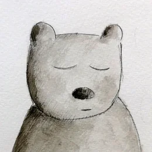

Illustrazioni nell'era degli uomini macchina
Chiudo gli occhi non per fuggire dal mondo, ma per lasciarlo entrare. Non dormo e non penso: ascolto. Le immagini nascono dal paesaggio e dalla vita quotidiana che mi circondano, dalla contemplazione, tra la terra del Basso Piave e le Dolomiti Friulane.